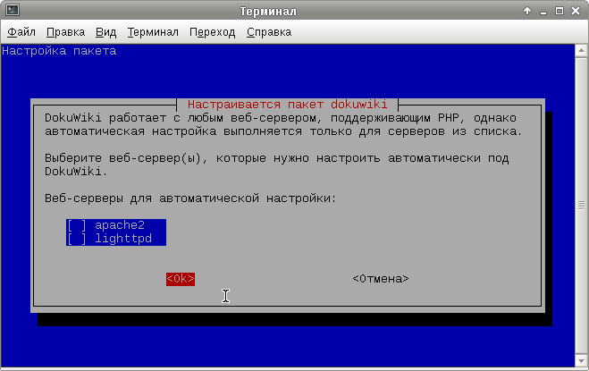
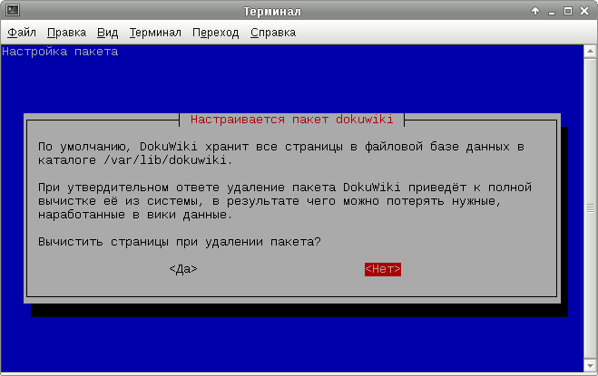
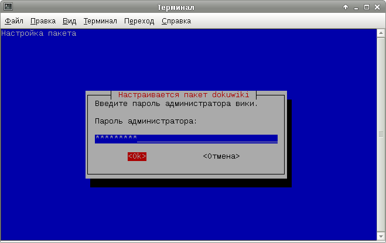
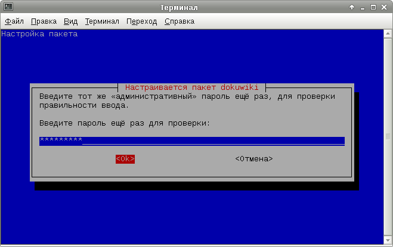
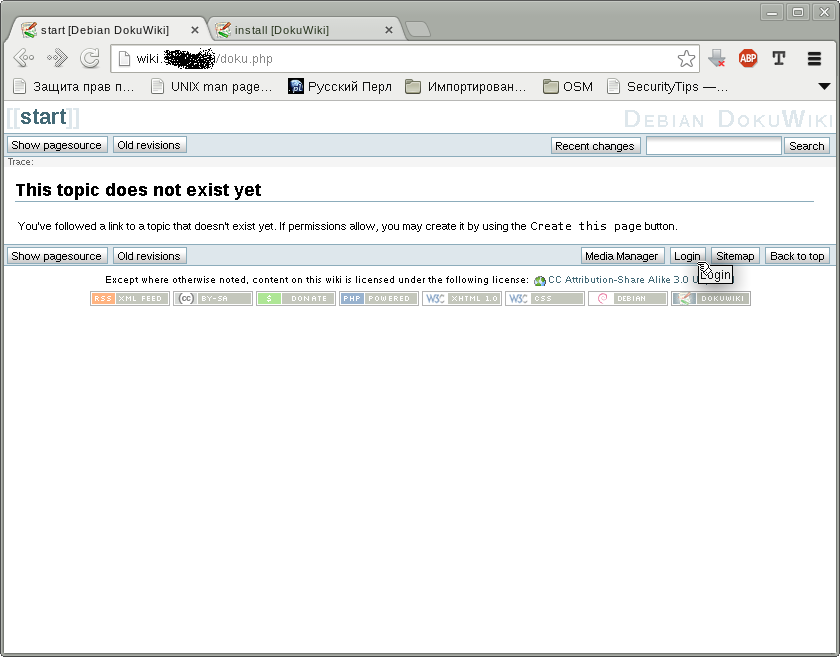
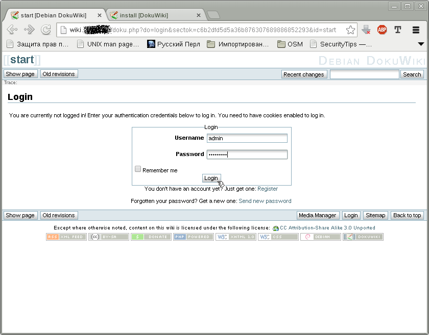
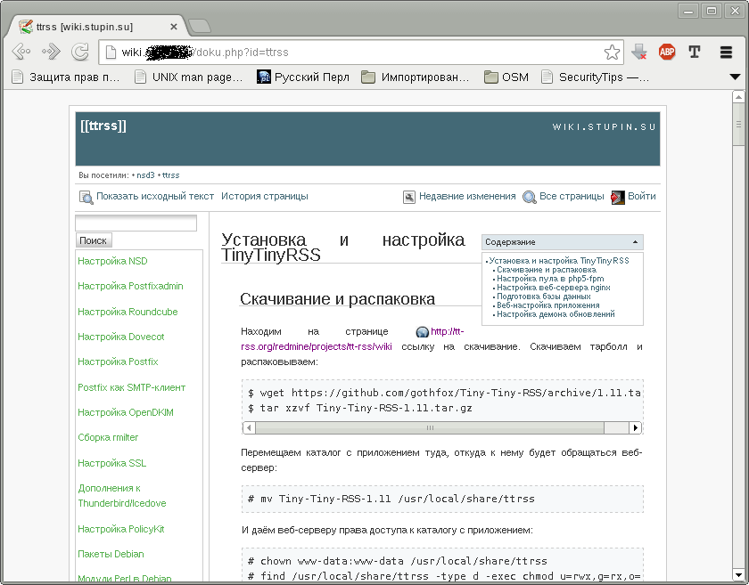

На этот раз я опишу настройку dokuwiki - небольшой wiki-системы на PHP, не использующей базы данных SQL. Поскольку не так давно я начал использовать вместо Lighttpd веб-сервер nginx, я опишу два варианта настройки.
Установим веб-сервер Lighttpd и PHP:
# apt-get install lighttpd php5-cgi
Для того, чтобы dokuwiki работала на отдельном домене, нужно исправить файл конфигурации /etc/lighttpd/conf-available/50-dokuwiki.conf до следующего состояния:
$HTTP["host"] == "wiki.domain.tld" {
server.document-root = "/usr/share/dokuwiki"
$HTTP["url"] =~ "^/" {
server.follow-symlink = "enable"
}
$HTTP["url"] =~ "/(\.|_)ht" {
url.access-deny = ( "" )
}
$HTTP["url"] =~ "^/(bin|data|inc|conf)" {
url.access-deny = ( "" )
}
}
В случае, если dokuwiki должна работать из каталога сайта, можно создать такой файл конфигурации /etc/lighttpd/conf-available/50-dokuwiki.conf:
$HTTP["host"] == "domain.tld" {
$HTTP["url"] =~ "^/wiki" {
server.document-root = "/usr/share/dokuwiki"
$HTTP["url"] =~ "^/" {
server.follow-symlink = "enable"
}
$HTTP["url"] =~ "/(\.|_)ht" {
url.access-deny = ( "" )
}
$HTTP["url"] =~ "^/(bin|data|inc|conf)" {
url.access-deny = ( "" )
}
}
}
Осталось включить поддержку fastcgi, PHP в fastcgi и только что созданный файл конфигурации:
# lighty-enable-mod fastcgi # lighty-enable-mod fastcgi-php # lighty-enable-mod dokuwiki
Чтобы настройки веб-сервера вступили в силу, нужно его перезапустить:
# /etc/init.d/lighttpd restart
Установим веб-сервер и менеджер управления FastCGI-процессами PHP:
# apt-get install nginx-light php5-fpm
php5-fpm устанавливается с преднастроенным пулом процессов в файле /etc/php/fpm/pool.d/www.conf, так что дополнительные настройки не требуются. Но при желании можно настроить имеющийся пул или создать отдельный пул.
Теперь добавим файл /etc/nginx/sites-available/dokuwiki с настройками для dokuwiki, если нужно настроить её на отдельном домене:
server {
listen 80;
server_name wiki.domain.tld;
root /usr/share/dokuwiki;
index index.php;
location /bin/ {
deny all;
}
location /data/ {
deny all;
}
location /inc/ {
deny all;
}
location /conf/ {
deny all;
}
location ~ \.ht {
deny all;
}
location ~ \.php$ {
fastcgi_pass unix:/var/run/dokuwiki.sock;
fastcgi_index index.php;
include fastcgi_params;
}
}
Или, если dokuwiki должна работать из отдельного каталога на имеющемся сайте, можно добавить в файл конфигурации этого сайта следующие настройки:
location /wiki/bin/ {
deny all;
}
location /wiki/data/ {
deny all;
}
location /wiki/inc/ {
deny all;
}
location /wiki/conf/ {
deny all;
}
location /wiki {
alias /usr/share/dokuwiki;
index index.php;
location ~ \.ht {
deny all;
}
location ~ \.php$ {
fastcgi_pass unix:/var/run/php5-fpm.sock;
fastcgi_index index.php;
include fastcgi_params;
}
}
Осталось включить использование конфигурации сайта, если вы настраивали dokuwiki на отдельном домене:
# cd /etc/nginx/sites-enabled # ln -s /etc/nginx/sites-available/dokuwiki .
И перезапустить nginx, чтобы его новые настройки вступили в силу:
# /etc/init.d/nginx restart
Можно было бы написать ещё и третий вариант настройки - для использования Lighttpd совместно с php5-fpm, но я не стану этого делать. Кому понадобится такой вариант - тот разберётся в нём сам.
Установка dokuwiki проста - нужно лишь установить соответствующий пакет:
# apt-get install dokuwiki
В процессе установки будет задано несколько вопросов:
   После установки можно зайти в веб-интерфейс с паролем администратора, который мы указали при установке:
 Я также пользуюсь темой arctic для dokuwiki. Пакет с этой темой можно взять у меня: dokuwiki-arctic-theme_0.0.20081104_all.deb
dokuwiki можно настраивать как прямым редактированием конфигурационных файлов, так и через веб-интерфейс. Если вам не хочется тратить время на ручную правку файлов, можете перейти к следующему разделу.
Для первичной настройки достаточно лишь прописать в файл /etc/dokuwiki/local.php несколько настроек:
$conf['title'] = 'wiki.domain.tld'; # Название wiki, которое будет на ней отображаться $conf['license'] = ''; # Название лицензии, под которой выкладываются материалы $conf['lang'] = 'ru'; # Язык интерфейса $conf['useacl'] = 1; # Включает использование списков ограничения доступом $conf['superuser'] = '@admin'; # Группа для администраторов $conf['template'] = 'arctic'; # Используемая тема
Любую из настроек можно не вписывать - у них у всех есть значения по умолчанию.
В файле /etc/dokuwiki/plugins.local.php я отключил использование плагина, отсылающего разработчикам статистику использования dokuwiki:
<?php $plugins['popularity'] = 0; ?>
В файле acl.auth.php можно настраивать права доступа к определённым разделам wiki. Например, вот так можно ограничить доступ к разделу private для незарегистрированных пользователей:
* @ALL 1 * @user 8 private:* @ALL 0
В теме arctic, которую я использую, в файле /etc/dokuwiki2/themes/arctic/default.php я удаляю из настроек всех правых и левых панелей страницу index, поскольку для каждого раздела я создаю вручную страницу sidebar, которая и выполняет роль оглавления раздела.
Для того, чтобы можно было менять настройки из самой DokuWiki, нужно назначить права доступа веб-сервера к каталогу /etc/dokuwiki:
# chgrp www-data /etc/dokuwiki # chmod ug=rwx,o=rx /etc/dokuwiki
Также нужно поменять права доступа веб-сервера к файлу /etc/dokuwiki/local.php и, по желанию, к другим файлам в этом каталоге:
# chown www-data /etc/dokuwiki/local.php # chmod u=rw,go=r /etc/dokuwiki/local.php
После этих манипуляций можно настраивать dokuwiki через меню "Управление".
Вот так выглядит настроенная мной dokuwiki с темой arctic:
